歯原性腫瘍
- エナメル上皮腫の診断と治療が最頻出（16問中7問）
- 画像・病理所見からの診断名の特定が問われる
- 治療選択（摘出 vs 辺縁切除 vs 区域切除）の判断が重要
- 骨形成線維腫と線維性異形成症の鑑別が繰り返し出題
歯原性腫瘍の鑑別一覧
| 腫瘍 | X線所見 | 好発 | 治療 |
|---|---|---|---|
| エナメル上皮腫 | 多房型透過像（soap bubble）、歯根吸収 | 下顎臼歯部〜下顎枝、10〜30歳 | 単嚢胞型→摘出・開窓 充実型→辺縁/区域切除 |
| 歯原性粘液腫 | 多房型透過像（soap bubble） | 大臼歯部、10〜40歳 | 摘出・骨削除 |
| セメント芽細胞腫 | 歯根と連続する不透過像＋周囲透過帯 | 下顎大臼歯、30〜60歳 | 歯根ごと摘出 |
| 歯牙腫 | 集合型：小歯様構造 複雑型：不規則な石灰化塊 |
15歳以下90%、下顎臼歯部 | 摘出術 |
| 骨形成線維腫 | 辺縁明瞭な透過像＋内部石灰化 | 下顎、女性 | 摘出術 |
エナメル上皮腫
特徴
最も頻度の高い歯原性腫瘍。良性だが局所浸潤性が強く、再発しやすい。
分類
- 充実型/多嚢胞型：濾胞型（follicular）が70%を占める。叢状型（plexiform）もある。深在性浸潤（80%）→ 区域切除を考慮
- 単嚢胞型：内腔型（luminal）と壁内型（mural）。壁内型は浸潤範囲が広い。含歯性嚢胞と画像上類似
病理所見
- 濾胞型：島状の胞巣。最外層に円柱状〜高円柱状細胞が柵状に配列。中心部はエナメル髄様（星芒状細胞）
- 叢状型：索状〜網状のエナメル上皮腫様細胞の増殖
治療選択のポイント
- 単嚢胞型 → 摘出・開窓が基本
- 充実型・小さいもの → 摘出・骨削除（顎骨保存）
- 充実型・深在性浸潤あり → 辺縁切除または区域切除
- 上顎のエナメル上皮腫 → 上顎骨部分切除（上顎は骨が薄く浸潤しやすい）
- 術前説明：再発の可能性とオトガイ部の知覚異常
歯原性粘液腫
- X線：soap bubble appearance（多房性透過像）。エナメル上皮腫との鑑別が必要
- 病理：粘液性基質中に三角形状・星芒状の腫瘍細胞が散在
- 十分に摘出しないと再発しやすい→ 摘出・骨削除
セメント芽細胞腫
- X線：歯根と連続する境界明瞭な不透過像。周囲に透過帯（非石灰化縁）
- 病理：reversal lineを示すセメント質様硬組織形成が特徴
- 下顎第一大臼歯に好発
- 治療：歯根ごと摘出
歯牙腫
- 集合型（compound）：大小さまざまな歯牙様構造の集合。好発：上顎前歯部
- 複雑型（complex）：不規則に形成された象牙質・エナメル質の塊。好発：下顎臼歯部
- 永久歯の萌出遅延の原因となる
- 治療：摘出術。再発はまれ
骨形成線維腫と線維性異形成症の鑑別
| 鑑別点 | 骨形成線維腫 | 線維性異形成症 |
|---|---|---|
| 境界 | 明瞭 | 不明瞭 |
| X線所見 | 辺縁明瞭な透過像＋内部石灰化 | すりガラス様（ground glass） |
| 発症時期 | 成人 | 思春期に発症・成長終了で停止 |
| 治療 | 摘出術 | 変形や咬合不全がなければ経過観察 |
過去問
30歳の男性。下顎の腫脹を主訴として来院した。3年前から自覚していたが無痛性のためそのままにしていたところ、徐々に増大してきたという。初診時のエックス線画像（別冊No.10A）、MRI T2強調像（別冊No.10B）及び生検時のH-E染色病理組織像（別冊No.10C）を別に示す。
診断名はどれか。1つ選べ。
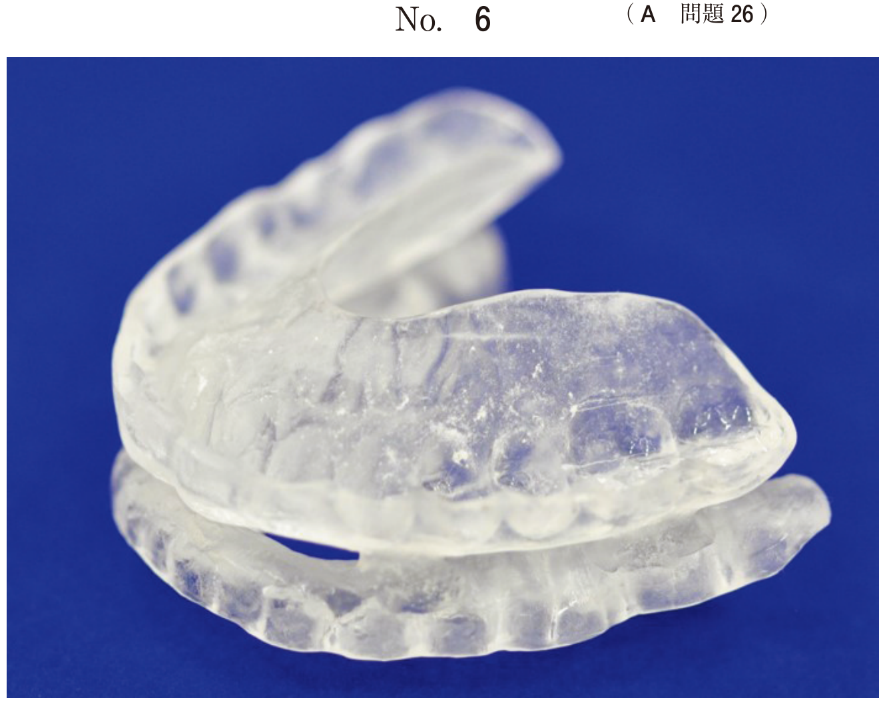
b 歯原性粘液腫
c エナメル上皮腫
d 石灰化歯原性嚢胞
e 腺腫様歯原性腫瘍
【解説】下顎の多房型透過像で、病理で島状の胞巣（濾胞型）を認める。エナメル上皮腫の典型的所見。歯原性粘液腫も多房型だが、病理は粘液性基質中の星芒状細胞が特徴で区別できる。
13歳の男子。下顎左側大臼歯部歯肉の腫脹を主訴として来院した。2か月前に気付き、徐々に増大してきたという。腫脹は弾性軟である。初診時の口腔内写真（別冊No.17A）、エックス線画像（別冊No.17B）、CT（別冊No.17C）、MRI（別冊No.17D）及び生検時のH-E染色病理組織像（別冊No.17E）を別に示す。
診断名はどれか。1つ選べ。
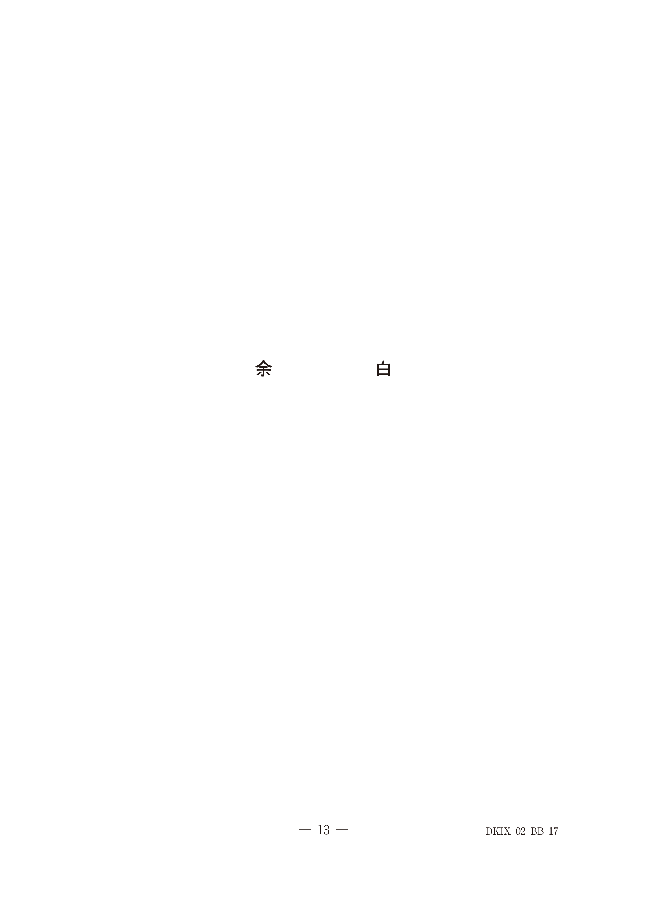
b 単純性骨嚢胞
c エナメル上皮腫
d 腺腫様歯原性腫瘍
e 歯原性角化嚢胞〈角化嚢胞性歯原性腫瘍〉
【解説】下顎臼歯部の弾性軟の腫脹。エナメル上皮腫の単嚢胞型は含歯性嚢胞との鑑別が重要だが、病理組織像で確定診断する。
12歳の男児。右側顔面の腫脹を主訴として来院した。2年前に同部の腫脹と違和感に気付いていたが放置し、その後腫脹は次第に増大してきたという。初診時の顔貌写真（別冊No.1A）、口腔内写真（別冊No.1B）、エックス線写真（別冊No.1C）、CT（別冊No.1D）及び生検時のH−E染色病理組織像（別冊No.1E）を別に示す。
適切な処置はどれか。1つ選べ。
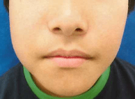
b 抗菌薬投与
c 摘出・開窓術
d 下顎区域切除術
e 下顎半側切除術
【解説】12歳の若年者の単嚢胞型エナメル上皮腫。顎骨の発育を考慮し、保存的に摘出・開窓術を選択。区域切除や半側切除は侵襲が大きすぎる。
17歳の男子。下顎右側臼歯部の腫脹を主訴として来院した。5か月前に気付いたが痛みがないためそのままにしていたところ、徐々に腫脹が増大してきたという。診察の結果、顎骨保存療法を行うこととした。初診時の口腔内写真（別冊No.22A）、エックス線画像（別冊No.22B）、CT（別冊No.22C）及び生検時のH-E染色病理組織像（別冊No.22D）を別に示す。
術前に説明が必要なのはどれか。2つ選べ。
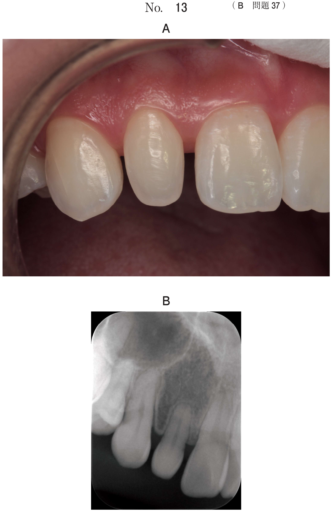
b 再発の可能性
c 下唇の運動障害
d 埋伏智歯の萌出誘導
e オトガイ部の知覚異常
【解説】顎骨保存療法（摘出・骨削除）では再発の可能性があること、下歯槽神経に近接する場合はオトガイ部の知覚異常のリスクを術前に説明する必要がある。顔貌変形や下唇の運動障害は区域切除の場合のリスク。
20歳の女性。下顎右側大臼歯部の腫脹を主訴として来院した。3か月前から徐々に増大してきたという。同部は骨様硬で軽度の圧痛を認める。初診時の口腔内写真（別冊No.6A）、エックス線画像（別冊No.6B）、CT（別冊No.6C）、MRI（別冊No.6D）及び生検時のH-E染色病理組織像（別冊No.6E）を別に示す。
適切な治療はどれか。1つ選べ。
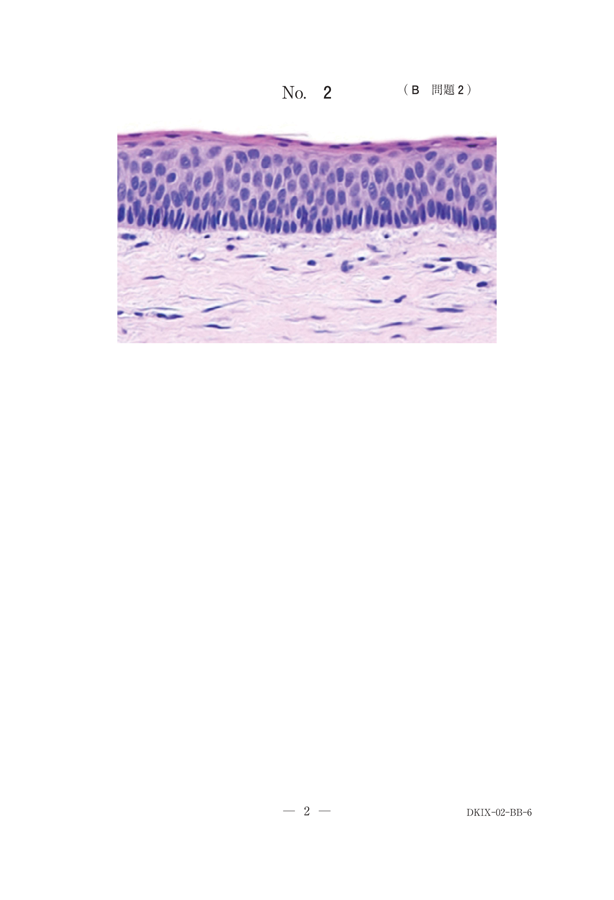
b 皮質骨除去術
c 下顎辺縁切除術
d 下顎区域切除術
e 放射線療法
【解説】充実型エナメル上皮腫で深在性浸潤を認める症例。摘出や開窓では再発リスクが高い。下顎区域切除術が適切。放射線療法はエナメル上皮腫には無効。
34歳の女性。かかりつけ歯科医にエックス線検査で病変を指摘され、精査を希望して来院した。自覚症状はないという。初診時のエックス線画像（別冊No.28A）、CT（別冊No.28B）、MRI（別冊No.28C）及び生検時のH-E染色病理組織像（別冊No.28D）を別に示す。
適切な治療法はどれか。1つ選べ。
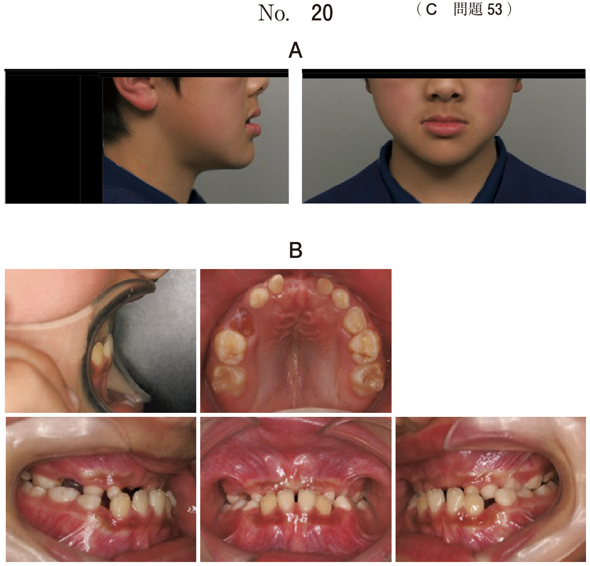
b 摘 出
c 寒栓療法
d 放射線療法
e 下顎区域切除
【解説】充実型エナメル上皮腫で広範な浸潤を認める症例。区域切除が適切。開窓や摘出では再発リスクが高い。
49歳の女性。下顎右側前歯部の違和感を主訴として来院した。321┐の唇側根尖相当部に骨様硬の膨隆を触知する。初診時の口腔内写真（別冊No.43A）、エックス線写真（別冊No.43B）、病変中央部の歯科用コーンビームCT（別冊No.43C）、病変が最も下方に進展した部位の歯科用コーンビームCT（別冊No.43D）及び生検時のH−E染色病理組織像（別冊No.43E）を別に示す。
適切な治療法はどれか。1つ選べ。
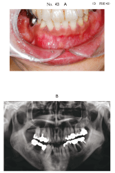
b 開窓術
c 摘出術
d 下顎辺縁切除術
e 下顎区域切除術
【解説】下顎前歯部のエナメル上皮腫。下方への進展が限られており下顎骨下縁が保たれている場合は辺縁切除術が適切。区域切除は下顎骨の連続性を断つ術式で、辺縁切除で対応可能な場合は不要。
45歳の男性。上顎右側歯肉の腫脹を主訴として来院した。3 か月前に気付いたが痛みがないため放置していたという。初診時の口腔内写真（別冊No.27A）、エックス線写真（別冊No.27B）、CT（別冊No.27C）及び生検時のH-E染色病理組織像（ 別冊No.27D）を別に示す。
治療として適切なのはどれか。1つ選べ。
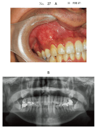
b 掻爬術
c 骨整形術
d 放射線治療
e 上顎骨部分切除術
【解説】上顎のエナメル上皮腫は骨が薄く浸潤しやすいため、上顎骨部分切除術が適切。下顎と異なり保存的治療では再発リスクが高い。
38歳の女性。かかりつけ歯科医のエックス線検査で下顎右側犬歯部の異常を指摘され、精査を勧められ来院した。３┐に打診痛と動揺はなく、歯肉に炎症所見はない。歯髄電気診で生活反応を示した。初診時の口内法エックス線画像（別冊No.10A）、パノラマエックス線画像（別冊No.10B）、歯科用コーンビームCT（別冊No.10C）及び摘出物のH-E染色病理組織像（別冊No.10D）を別に示す。
診断名はどれか。1つ選べ。
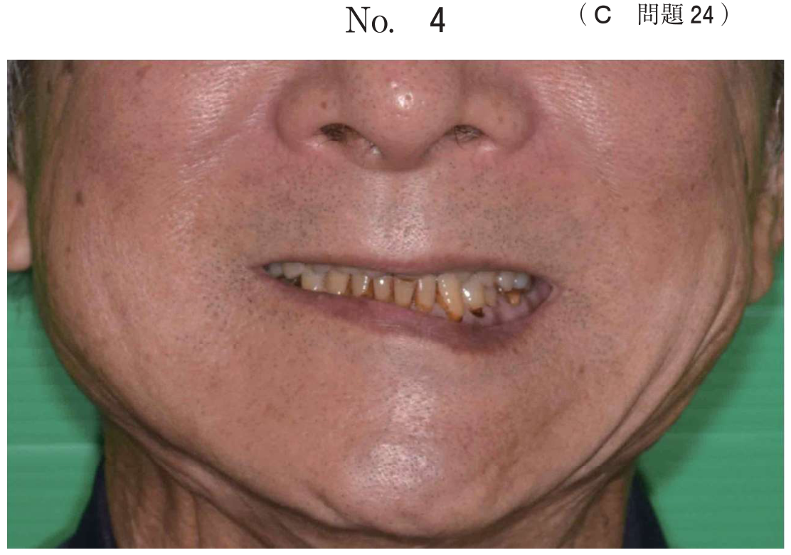
b セメント芽細胞腫
c 腺腫様歯原性腫瘍
d 石灰化上皮性歯原性腫瘍
e セメント質骨形成線維腫
【解説】辺縁明瞭な透過像に内部石灰化物を認め、歯髄は生活。骨形成線維腫（セメント質骨形成線維腫）の典型。線維性異形成症はすりガラス様で境界不明瞭。セメント芽細胞腫は歯根と連続する不透過像。
56歳の女性。下顎左側臼歯部の咬合時の違和感を主訴として来院した。1か月前に自覚し、痛みがなかったためそのままにしていたという。初診時のエックス線画像（別冊No.30A）とCT（別冊No.30B）を別に示す。
考えられるのはどれか。1つ選べ。
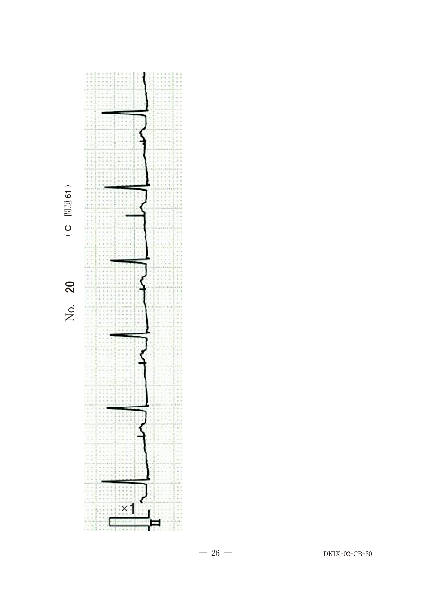
b 歯原性粘液腫
c エナメル上皮腫
d 線維性異形成症
e セメント質骨形成線維腫〈骨形成線維腫〉
【解説】辺縁明瞭な骨吸収像の内部に石灰化物を認める。境界明瞭であることが線維性異形成症との最大の鑑別点。
35歳の女性。下顎左側臼歯部の膨隆を主訴として来院した。病変は骨様硬で、疼痛や下唇の感覚異常はない。初診時の口腔内写真（別冊No. 2A）、エックス線画像（別冊No. 28）、CT （別冊No. 2C）及び生検時のH-E染色病理組織像（別冊No. 2D）を別に示す。
診断はどれか。1つ選べ。
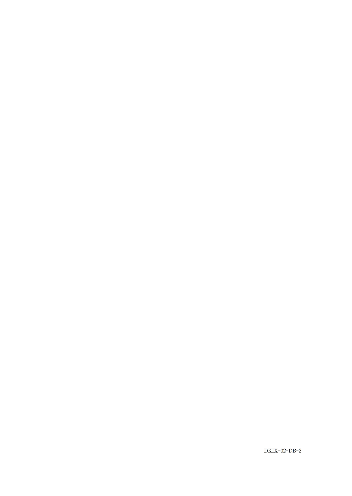
b エナメル上皮腫
c 線維性異形成症
d セメント芽細胞腫
e 腺腫様歯原性腫瘍
【解説】下顎の骨様硬の膨隆で、X線で辺縁明瞭な病変を認める。病理で線維性結合組織中にセメント質様硬組織が形成されており、骨形成線維腫の所見。境界明瞭な点が線維性異形成症との鑑別点。
15歳の男子。下顎左側大臼歯部の腫脹を主訴として来院した。3か月前から徐々に増大してきたという。同部に骨様硬の膨隆を認めるが、粘膜は正常である。初診時のエックス線画像（別冊No.16A）、CT（別冊No.16 B）、摘出物の割面写真（別冊No.16C）、H-E染色病理組織像（別冊No.16D）及び矢印で示す部分の拡大像（別冊No.16E）を別に示す。
診断名はどれか。1つ選べ。
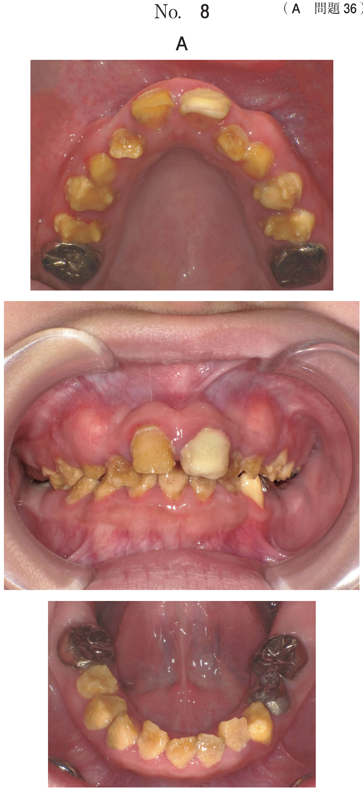
b 骨形成線維腫
c 歯原性粘液腫
d 線維性異形成症
e セメント芽細胞腫
【解説】歯根と連続する不透過像で周囲に透過帯を認める。セメント芽細胞腫の典型的X線所見。病理でreversal lineを示すセメント質様硬組織形成を確認。
45歳の女性。口蓋部の腫脹を主訴として来院した。1年前から自覚していたが、痛みがないためそのままにしていたという。左側口蓋部に骨様硬の腫脹を認める。初診時の口腔内写真（別冊No.36A） 、エックス線画像（別冊No.36B）、CT（別冊No.36C）、MRI（別冊No.36D）及び生検時のH-E染色病理組織像（別冊No.36E）を別に示す。
診断名はどれか。1つ選べ。
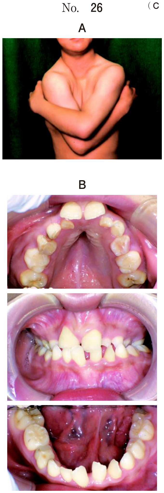
b 扁平上皮癌
c 歯原性粘液腫
d エナメル上皮腫
e 線維性異形成症
【解説】口蓋部の骨様硬の腫脹で、病理で粘液性基質中に星芒状・紡錘形の腫瘍細胞が散在。歯原性粘液腫の所見。
66歳の男性。下顎右側臼歯部の腫脹を主訴として来院した。6か月前に顎骨の膨隆に気付いたが、疼痛がないためそのままにしていたという。自発痛や下唇の感覚異常は認めない。下顎右側臼歯部に骨の膨隆を触知した。生検を行ったところ内部に軟組織の充満を認めた。初診時の口腔内写真（別冊No.22A）、エックス線画像（別冊No.22B）、CT（別冊No.22C）及び生検時のH-E染色病理組織像（別冊No.22D）を別に示す。
適切な治療法はどれか。1つ選べ。
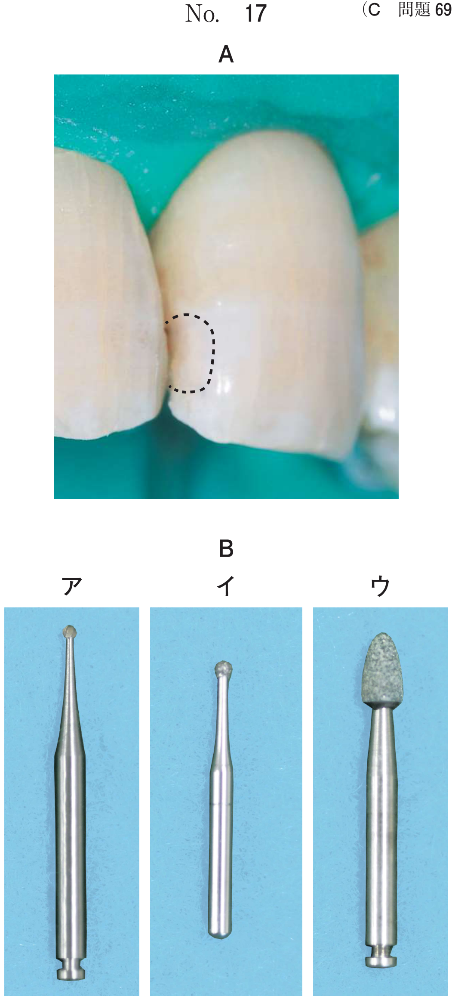
b 摘出・骨削除
c 下顎区域切除
d 下顎半側切除
e 放射線治療
【解説】歯原性粘液腫の治療は摘出・骨削除が基本。区域切除は良性腫瘍に対しては過剰。開窓は嚢胞に対する術式であり腫瘍には不適切。
9歳の男児。上顎右側第一大臼歯の萌出遅延を主訴として来院した。初診時のエックス線写真（別冊No.31）を別に示す。
疑われるのはどれか。1つ選べ。

b 骨形成線維腫
c 線維性異形成症
d エナメル上皮腫
e 腺腫様歯原性腫瘍
【解説】9歳の永久歯萌出遅延で、X線上に歯牙様構造（小歯様の不透過像の集合）を認める。歯牙腫（集合型）が最も疑われる。歯牙腫は15歳以下に好発し、永久歯の萌出遅延の原因となる。
6歳の女児。下顎の膨隆を主訴として来院した。かかりつけ歯科医のエックス線検査で異常を指摘されたという。下顎左側乳臼歯部に骨様硬の膨隆を触知するが圧痛はない。初診時の口腔内写真（別冊No.14A）、エックス線画像（別冊No.14B）、CT（別冊No.14C）及びH-E染色病理組織像（別冊No.14D）を別に示す。
診断名はどれか。1つ選べ。
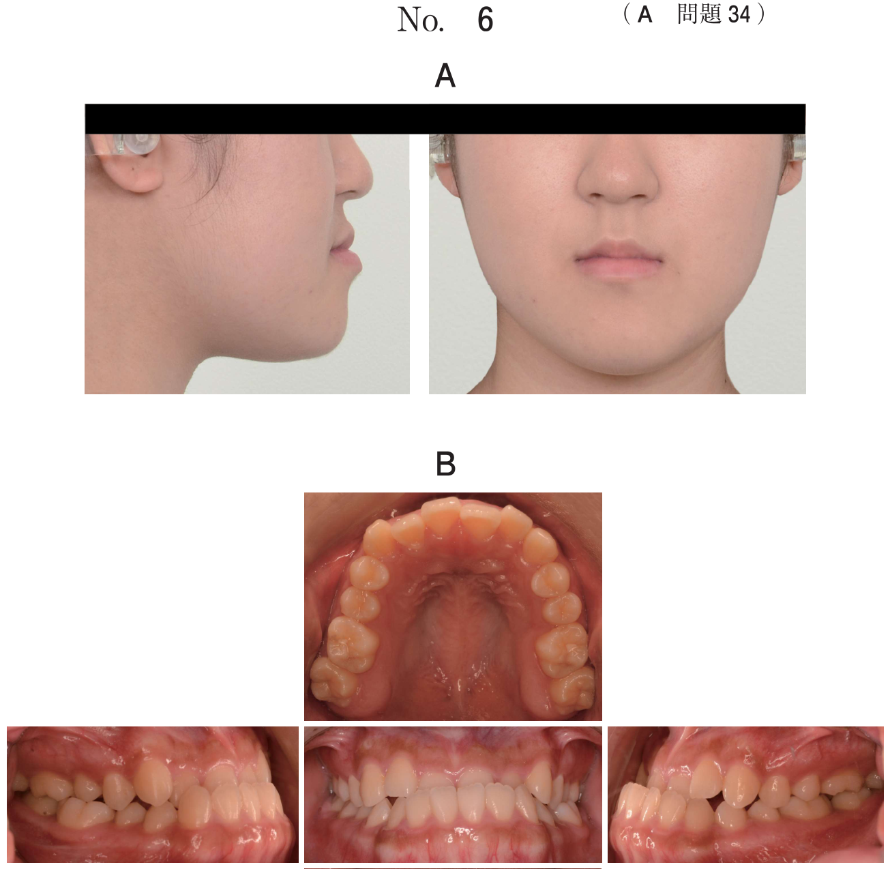
b ぬれ性の向上
c 知覚過敏の抑制
d レジンタグの形成
e 管間象牙質へのモノマー浸透性向上
※ CSVデータに116A56の選択肢が混入しています。116A55は歯原性腫瘍（セメント芽細胞腫と推定）の診断問題です。